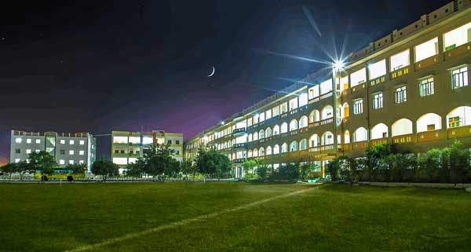

PACE INSTITUTE OF TECHNOLOGY AND SCIENCES
PACE provides good number of offers with highest packages in top companies. Youngest college to achieve Autonomous status in 10 years of inception.Accredited by NBA and NAAC with grade IIT Madras recognized PACE as a valuable NPTL Local Chapter with rating of Dell EMC Center of Excellence in Data Science.
PACE is awarded the Most Trusted Engineering Institute of the year 2022 by Iconic India Award. PACE has been chosen as the winner of Indian Business Congress Awards.
Best Engineering College in Andhra Pradesh for the year 2017-2018.

.png)
Best Training and Placement Institute Award (Andhra Pradesh) 2015 Leaders Awards. Fast Emerging Private Engineering & Management Institute Award in the Region. Global Quality Award for Excellence in Education.
PACE has TOEFL Test Center. PACE Approved as Skill Development Center by Govt. of Andhra Pradesh. PACE Ranked among the Top Colleges of India by EDURAND SURVEY-2014. “Most Promising Private Engineering College in the Region” by Brands Academy, Mumbai. PACE has the Consistent Record of Achieving highest Admissions. “AA” Ranking by Career 360 Magazine Incubation & Entrepreneurship Development Programs.
High qualified and Rich Industry Experienced Management. Well Equipped Labs, Well Stocked Library, Well Qualified and Research oriented faculty. Industry Oriented Training right from first year. State-of the -Art Infrastructure.
On Campus A/C &Non A/C Hostels. TCS ION Center. ATM Center , Post Office Wi-Fi Enabled Campus E-gov. Campus. Digital Library PACE has a specious Ground for Sports. Well Equipped Seminar Halls for Conducting various activities & programs.
- The Department of Electronics & Communication Engineering was established in 2008-2009.
The department offers a four-year graduate program in Electronics & Communication Engineering
with an annual intake of 180 students and two-year Post Graduate program VLSI & ES with an annual intake of 18 students.
The department offers hands on training to the students to meet the requirements of industry through well-equipped and
updated technological laboratories with state of the art equipment under the guidance of highly qualified, experienced and dedicated faculty. - Banna
- Break
students into technically superior, ethically strong, and self-disciplined to
serve the nation as a valuable resource.
and state-of-the-art facilities..
To enrich the intellectual know-how, credibility, and integrity of the students to necessitate industry.
To recognize as scholarly and influential leaders in engineering education and
to develop human power with creativity and passion for the advancement of future nations.
Dr. R. Veeranjaneyulu has played a key role in the admissions process at PACE as the Director of Admissions. The fact that he has been able to achieve 100% admissions
for the past 10 years suggests that he is highly effective in this role. Achieving 100% admissions is no small feat, and it suggests that Dr. Veeranjaneyulu has developed and implemented successful strategies to attract and enroll a diverse and talented student body. This involve targeted outreach efforts, effective communication with prospective students and their families, and the development of strong partnerships with colleges and other educational institutions. As a Dean of Student Affairs he coordinates with the activities of cultural, co-curricular and Sports & games, Management of hostels, Mentoring & Discipline.
Dr. T R Chaithanya, a PhD holder in Computer Science & Engineering with 14 years of professional experience, currently serves as the Director of Planning and Evaluation.
In this dual role, Dr. Chaithanya spearheads strategic planning initiatives and evaluates organizational performance. As the Planning Director, Dr. Chaithanya develops short-term and long-term strategies. Collaborating with senior management, Dr. Chaithanya ensures alignment with the institute’s vision and mission, driving growth and improvement. In the Evaluation Director capacity, Dr. Chaithanya designs evaluation frameworks, gathers data, and analyzes performance metrics to measure the impact at various levels. Through data-driven insights, Dr. Chaithanya provides actionable recommendations to optimize processes and resource utilization. With a strong background in Computer Science & Engineering, Dr. Chaithanya's leadership enhances innovation, fosters continuous improvement, and contributes to overall organizational success.
With 22 years of overall experience, Ms. Roopa brings a broad perspective and deep understanding of the job market to her work as a Placement Officer, Career Guidance counselor,
and Convener for Alumni Affairs. Her 9 years of experience in the corporate sector have given her valuable insights into the needs and expectations of employers, as well as an understanding of the skills and experience that are most in demand in the job market. Ms. Roopa's decision to transition to a career at PACE after her time in the corporate world have been motivated by a desire to help fresh grads achieve their career goals and make a positive impact in the world. Her extensive experience and expertise in career development and placement are highly valued by both students and employers, and she is seen as a trusted advisor and mentor in the field, and she is making a significant contribution to the success and well-being of the PACE students and alumni.
Dr. D. Anil Kumar (Member, IEEE) is presently working as an Assistant Professor & Dean (R&D. He has received M.Tech. and Ph.D. degrees from the Koneru Lakshmaiah Education Foundation, Guntur, India. He has published more than 55 papers (49 SCI/Scopus), and 2 Patents, his h-Index is 15 & Citations are more than 550+. He is a reviewer for several journals in IEEE, Elsevier, etc. His work is mainly focused on the development of 3-D processing algorithms for computer vision applications. His research interests include video processing, computer vision, and sign language machine translation.
Dr.M. APPA RAO has an extensive academic experience of 23 years in the domain of Electronics and Communication. To his credit, he published 22 research papers in various reputed National and
International Journals that testifies his immense research proficiency. As A Dean – Academics, he strives to promote excellence in instruction and creative productivity and he is Responsible for Academic Programs, Preparation of Time Tables, Monitoring of Teaching, Board of Studies. He monitors the Adherence of Academic Rules by all Teaching Faculty and Students.